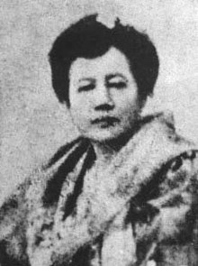

Mercado - Rizal Family
During their time, the Rizals have been considered to be one of the most powerful families. Domingo Lam-co, the family’s paternal ascendant was a full-blooded Chinese who came to the Philippines from Amoy, China in the closing years of the 17th century.
Jose Rizal came from a 13-member family consisting of his parents, Francisco Mercado II and Teodora Alonso Realonda, and nine sisters and one brother.
Francisco Engracio Rizal Mercado y Alejandro
the father of the Philippines' national hero Jose Rizal. He was born in Biñan, Laguna. He had a wife named Teodora Realonda y Quintos and had 11 children altogether.
Teodora Alonso Realonda y Quintos

The mother was a vigorous and persistent woman with a loving heart and a pleasant personality.
1. Saturnina
(1850-1913) She's called Neneng, to be exact. She's the eldest sister of Jose Rizal, a Filipino National hero. She was married to Manuel T. Hidalgo, a native of Batangas and one of the richest people in this area.
2. paciano
(1851-1930) the second child in the family and Rizal's only brother. Paciano Rizal helped their parents choose the young Jose’s tutors and later acted as Jose’s guardian in school. With an uncle, Paciano helped Rizal go to Europe in 1882 and was the one who told their parents about Jose’s departure. For five years, he sent his brother a monthly pension of 50 pesos, later 35 pesos. He also constantly updated his brother about what was going on with their family and in the country through letters.
After Rizal was executed, Paciano became a general of the Revolutionary Army. He was also appointed as a military commander of the revolutionary forces in Laguna, where the American forces captured him in 1900.
3. Narcisa

(1852-1939) third Rizal, was married to Antonio Lopez of Morong, Rizal. she took on the responsibility of overseeing Rizal's estate and matters subsequent to his execution in 1896. Narcisa Rizal's involvement in the Philippine revolution, coupled with her unwavering backing of her brother's nationalist endeavors, has firmly etched her as a symbol of fortitude and devotion in the annals of Philippine history.
4. Olympia
(1855-1887) fourth Rizal child, was married to Silvestre Ubaldo. Jose loved to tease her, sometimes good-humoredly describing her as his stout sister. Jose’s first love, Segunda Katigbak, was Olimpia’s schoolmate at the La Concordia College. Rizal confided to Olympia about Segunda and the sister willingly served as the mediator between the two teenage lovers. It was thus unclear whether it was Olympia or Segunda whom Jose was frequently visiting at La Concordia at the time. She died of childbirth in 1887.
5. Lucia

(1857-1919) was the fifth child in the family. She married Mariano Herbosa of Calamba, Laguna. Charged of inciting the Calamba townsfolk not to pay land rent and causing, unrest, the couple was once ordered to be deported along with some Rizal family members. Lucia’s husband died during the cholera epidemic in May 1889 andwas refused a catholic burial for not going to confession since his marriage to Lucia.
6. Maria

(1859-1945) was the sixth child in the family. It was to her whom Jose talked about wanting to marry Josephine Bracken when the majority of the Rizal family was apparently not amenable to the idea. In his letter dated December 12, 1891, Jose had also brought up to Maria his plan of establishing a Filipino colony in North British Borneo. In his letter dated December 28, 1891, Jose wrote to Maria, “I’m told that your children are very pretty.”
7. Jose Rizal
(1861-1896) sometimes called as Pepe, the seventh Rizal child and also the national hero of the Philippines.
8. Concepcion
(1862-1865) called Concha by her siblings, was the eight child of the Rizal family. She died at the age of three. Of his sisters, it was said that the young Pepe loved most little Concha who was a year younger than he. Jose played games and shared children’s stories with her, and from her he felt the beauty of sisterly love at a young age.
9. Josefa

her pet-name was Panggoy, she was the ninth child in the family. Panggoy died a spinster. Among Jose’s letters to Josefa, the one dated October 26, 1893 was perhaps the most fascinating. Written in English, the letter addressed Josefa as “Miss Josephine Rizal.” After Jose’s martyrdom, the epileptic Josefa joined the Katipunan and was even supposed to have been elected the president of its women section. She was one of the original 29 women admitted to the Katipunan along with Gregoria de Jesus, wife of Andres Bonifacio. They safeguarded the secret papers and documents of the society and danced and sang during sessions so that civil guards would think that the meetings were just harmless social gatherings
10. Trinidad

(1868-1951) or Trining was the tenth Rizal child. Historically, she became the custodian of Rizal’s last and greatest poem. Right before Jose’s execution, Trinidad and their mother visited him in the Fort Santiago prison cell. As they were leaving, Jose handed over to Trining an alcohol cooking stove, a gift from the Pardo de Taveras, whispering to her in a language, which the guards could not understand, “There is something in it.” That “something” was Rizal’s elegy now known as “Mi Ultimo Adios.” Like Josefa, Paciano, and two nieces, Trinidad joined the Katipunan after Jose’s deat
11. Soledad

(1870-1929), Also called Choleng, was the youngest child of the Rizal family. Being a teacher, she was arguably the best educated among Rizal’s sisters. In his long and meaty letter to Choleng dated June 6, 1890, Jose told her sister that he was proud of her for becoming a teacher. He thus counseled her to be a model of virtues and good qualities for the one who should be better than the persons who need her learning. Rizal nonetheless used the topic as leverage in somewhat rebuking her sister for getting married to Pantaleon Quintero of Calamba without their parent’s consent.
Early childhood
As a child, Rizal loved to go to the chapel, pray, participate in novenas, and join religious processions. In Calamba, one of the men he esteemed and respected was scholarly Catholic priest Leoncio Lopez, the town priest. He used to visit him and listen to his inspiring opinions on current events and thorough life views. Also, at the age of five, Pepe started to make pencil sketches and molds in clay and wax objects, which attracted his fancy.When he was about six years old, his sister once laughed at him for spending much time making clay and wax images. Initially keeping silent, he then prophetically told them “All right laugh at me now! Someday when I die, people will make monuments and images of me.
Another childhood memory was the daily Angelus prayer in their home. Rizal recorded in his memoir that by nightfall, his mother would gather all the children in their home to pray the Angelus.
At the age of eight, Rizal wrote his first poem entitled “Sa Aking Mga Kabata.” The poem was written in tagalog and had for its theme “Love of One’s Language.”
Challenges
With his father, Rizal made a pilgrimage to Antipolo to fulfill the vow made by his mother to take the child to the Shrine of the Virgin of Antipolo should she and her child survive the ordeal of delivery which nearly caused his mother’s life.
When Concha died of sickness in 1865, Jose mournfully wept at losing her. He later wrote in his memoir, “When I was four years old, I lost my little sister Concha, and then for the first time I shed tears caused by love and grief”